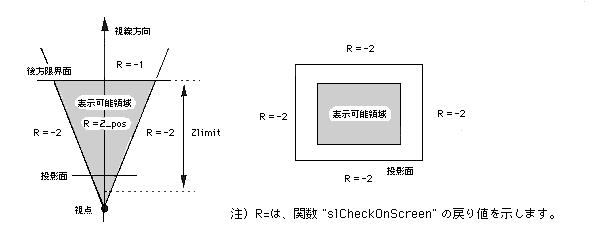

Return to previous page | Return to menu | Go to next page
FIXED
Other functions
Check if the specified coordinates are in the field of view
FIXED slCheckOnScreen(pos , size)
FIXED *pos ;
FIXED size ;
pos [XYZ] XYZ coordinate value representing the object position size Object size
Transforms the position of the specified object through the current matrix, tests whether an object of the specified size at that position is displayed on the screen, and returns the result.
When protruding from the display area in the Z direction: -1 (FFFFFFFF) When protruding from top, bottom, left or right: -2 (FFFFFFFE) If it fits on the screen: Z_position
The figure below shows the relationship between the displayable area and the return value.

Note) R = indicates the return value of the function “slCheckOnScreen”.
slCheckOnScreen